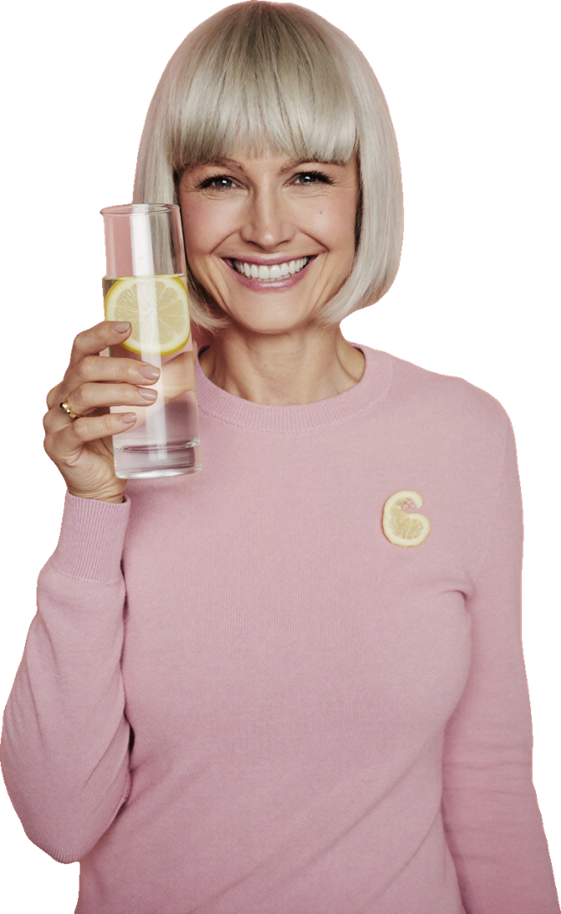

Plan 30 días · EnergíaBono #2
Hábitos base
Tus 6 hábitos de energía
Para cada uno hay un mínimo (para los días difíciles) y un ideal (para cuando te sientas con fuerzas). Los dos cuentan.

poco a poco
1Hidratación
Mínimo un vaso de agua al despertar y en cada comida.
Ideal 6 a 8 vasos de líquido al día (agua, leche, té o café sin azúcar).
Ideal: Eatwell Guide (Reino Unido).
2Movimiento
Mínimo 10 minutos de caminata.
Ideal 150 a 300 minutos a la semana de actividad moderada.
Ideal: OMS.
3Fuerza
Mínimo un ejercicio: sentarte y levantarte de una silla 8 veces.
Ideal 2 o más días a la semana trabajando los grandes grupos musculares.
Ideal: OMS. Tras la menopausia baja la masa muscular (AHA, 2020).
4Luz natural
Mínimo 10 minutos al aire libre por la mañana.
Ideal sal de día y baja las luces por la noche.
La luz guía tu reloj interno (NIGMS, NIH).
5Proteína
Mínimo una fuente de proteína en el desayuno.
Ideal en cada comida: legumbres, pescado, huevo, lácteos o tofu.
Fuentes de proteína: Eatwell Guide.
6Rutina de sueño
Mínimo despertarte a la misma hora.
Ideal horario regular, sin siestas, menos cafeína y alcohol.
Consejos del NHS contra el cansancio.
Ojo con los mínimos
Los mínimos son sugerencias de este plan para empezar sin agobio. Los ideales vienen de las fuentes citadas.
Si tienes una condición de salud
¿Corazón, riñón, articulaciones o lesiones? Consulta qué líquido y ejercicio te convienen.
Fuentes: Eatwell Guide (Gobierno de Gales/NHS); OMS, «Physical activity»; American Heart Association, declaración científica 2020 (resumen ACC); NIGMS, «Circadian Rhythms», 2023; NHS, «Self-help tips to fight tiredness».
Plan 30 días · Hábitos base3